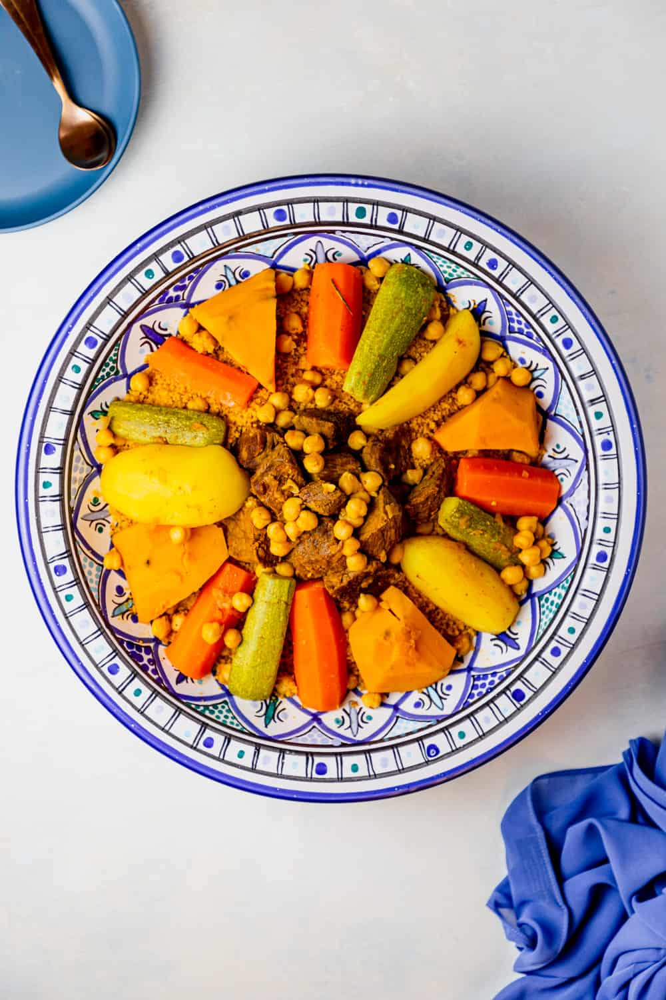

Tunisian Couscous

Description
Tunisian Couscous is a flavorful and hearty traditional dish made with steamed semolina grains, vegetables, and meat — often lamb or chicken. It’s spiced with harissa and aromatic spices, making it a comforting and satisfying main course.
Ingredients
- 2 cups couscous
- 1 tablespoon olive oil
- 1 onion, chopped
- 2 carrots, sliced
- 2 zucchinis, chopped
- 1 potato, diced
- 1 can chickpeas
- Harissa (to taste)
- 1 teaspoon ground coriander
- 1 teaspoon turmeric
- Salt and pepper to taste
- 500g lamb or chicken pieces
- 4 cups water or broth
Steps
- Heat olive oil in a large pot and sauté the onions until soft.
- Add the meat and brown it on all sides.
- Add the spices and harissa, stirring well.
- Add the vegetables and chickpeas, then pour in water or broth to cover.
- Cover and simmer for 45 minutes, or until the meat is tender.
- In a separate bowl, steam couscous following package directions.
- Fluff couscous with a fork and serve topped with meat, vegetables, and broth.